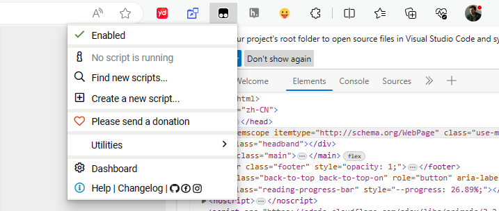

一次性搞懂浏览器扩展程序开发
概览
本文将介绍浏览器扩展是什么，怎么安装。详细分述关于浏览器扩展程序的开发，它项目结构，各个文件文件负者的职能，作为开发者我们可以怎么运用它们实现我们的功能。在开发到一定程度之后，该如何去调式，发现问题，解决问题。之后，如何发布开发好的浏览器开发程序。
全线保姆级别手把手教导
浏览器扩展是什么？
浏览器扩展是一种软件模块，可为Web浏览器添加功能。它通常是用HTML、CSS和JavaScript编写的，可以在Web浏览器中安装和运行，以修改浏览器的行为或提供其他功能。
浏览器扩展可用于自定义网页外观、阻止广告、管理密码、下载文件、增强隐私和安全性等许多任务。它们适用于流行的Web浏览器，如Google Chrome、Mozilla Firefox、Safari和Microsoft Edge，并可以从浏览器的扩展商店或第三方网站下载和安装。
任何具有基本Web开发技能的人都可以开发浏览器扩展，而且有许多在线资源可供学习如何创建它们。但是，在从第三方来源安装扩展时，需要谨慎，因为它们可能包含恶意代码，会危及您的浏览器和计算机的安全。
以下是一些最受欢迎的Web浏览器的扩展商店：
🔗 Chrome Web商店：https://chrome.google.com/webstore
🔗 Mozilla Add-ons：https://addons.mozilla.org/
🔗 Safari扩展程序库：https://extensions.apple.com/
🔗 Microsoft Edge Add-ons：https://microsoftedge.microsoft.com/addons
如何安装？
要使用官方方式安装浏览器扩展程序，请按照以下步骤操作：
1️⃣ 打开浏览器（Chrome、Firefox、Safari或Edge）；
2️⃣ 进入浏览器扩展商店（Chrome Web商店、Firefox 商店、Mozilla Add-ons、Safari扩展程序库、Microsoft Edge Add-ons）；
3️⃣ 搜索你要安装的扩展程序；
4️⃣ 点击要安装的扩展程序；
5️⃣ 点击“添加至Chrome”（或“添加至Firefox”、“获取”（Safari）或“获取”（Edge））按钮；
6️⃣ 查看扩展程序请求的权限，并单击“添加扩展程序”（或“添加至Firefox”、“安装”或“获取”）；
7️⃣ 扩展程序现在已安装并添加到浏览器工具栏或菜单中。但可能需要重新启动浏览器以使扩展程序完全可用。
如果您无法访问浏览器扩展商店，则有几种替代方法可以下载浏览器扩展程序：
📌 从扩展程序开发人员的网站下载：许多扩展程序开发人员在自己的网站上托管扩展程序文件，你可以手动下载和安装；
📌 使用第三方扩展程序下载器：有几个第三方网站允许您从Chrome Web商店、Mozilla Add-ons和其他扩展程序商店下载浏览器扩展程序。比如 CRX Extractor，它可以从Chrome Web商店提取扩展程序文件，并允许你手动安装。
📌 使用预装有扩展程序的便携式浏览器：某些便携式Web浏览器版本预装了流行的扩展程序，你可以在不安装扩展程序的情况下使用它们。
如何开发浏览器扩展？
技术栈
开发一个 chrome 扩展程序需要的技术栈：HTML、CSS、JavaScript
项目结构
1 | . |
 |
|---|
mainfest.json 是一个扩展程序最基本也是必须的，最少要有它。它是项目的配置文件，整个项目的结构是围绕它的配置项进行组织。
但是也不能只有它，毕竟没有业务逻辑的扩展程序是没有作用的！
一个有基本逻辑的扩展程序至少得有 content_scripts，而完整的完整的扩展程序包含 content_scripts、options、popup 和 background。
content_script：js脚本，可以与扩展程序匹配到的页面交互和操作；
options：扩展程序的设置页面，扩展程序暴露给用户的设置项一般放置在这个页面；
popup：扩展程序的信息面板，在浏览器安装扩展程序后，由点击工具栏扩展程序的图标呼起的菜单；
background：js脚本，但有别于 content_script，它可以使用 Chrome apis 以及 extension service worker。前三者都运行在自己的上下文，相互间是独立、隔离的，而 background 则可以通过 extension service worker 与它们三者通信，如上图，background 起到三个模块通信桥梁的重要作用！比包含但不限于以下作用：
1️⃣ 在options页面，开关扩展程序某功能，需要通知 content_script 开关对应功能；
2️⃣ content_script 执行或使用功能时需要将信息展示在 popup 面板；
3️⃣ 在 popup 面板临时禁用扩展程序，popup则需要通知 content_script。
Mainfest
manifest.json 是开发浏览器扩展时必备的清单文件，用于定义扩展程序的名称、版本、图标、权限、功能等信息。
它是必须的配置文件，需要将其存放在扩展程序的根目录下，即扩展程序的文件夹中！
以下是一个完整的manifest.json示例：
1 | { |
这个示例中包含了一些简单的配置：
name, version, description 分别指定了扩展程序的名称、版本号、描述。
action 指定了浏览器操作按钮的默认图标、标题和弹出窗口。
需要注意的是，这个示例中没有包含后台脚本、内容脚本、权限等配置，这些配置根据具体需求和功能可以添加
完整的 mainfest 属性定义以及例子可以查阅 Manifest file format
Content Scripts
扩展程序的 content script 作为浏览器扩展程序的一部分，主要用于与匹配到的页面交互和操作。它可以在匹配到的页面中注入 JavaScript 代码，并且可以访问页面的 DOM 和 JavaScript 对象。
特性
修改页面的内容和样式：content script 可以直接操作页面的 DOM 和 CSS 样式，实现对页面内容和样式的修改。
监听页面事件：content script 可以注册事件监听器，监听页面的事件，例如点击、滚动、输入等，从而实现与页面的交互。
与扩展程序通信：content script 可以通过 chrome.runtime.sendMessage()、chrome.runtime.onMessage、chrome.runtime.connect()、chrome.runtime.onConnect 等 subset API 与扩展程序进行通信，从而实现与扩展程序的交互。
执行页面脚本：content script 可以在匹配到的页面中执行 JavaScript 代码，从而实现更复杂的操作和交互。
操作浏览器标签页：content script 可以通过 chrome.tabs API 操作浏览器标签页，例如切换标签页、打开新标签页、关闭标签页等。
配置
content_scripts 的相关逻辑文件需要在 manifest.json 中通过配置指定！
1 | { |
js 属性： 用于指定要注入的 JavaScript 文件列表，即在匹配到的网页中，会将指定的 JavaScript 文件注入到网页中，从而实现对网页逻辑的修改和增强。它是一个数组，可以包含多个 JavaScript 文件路径。每个路径都是相对于扩展程序文件夹的路径，可以使用相对路径或绝对路径。
css 属性： 用于指定要注入的 CSS 文件列表，即在匹配到的网页中，会将指定的 CSS 文件注入到网页中，从而实现对网页样式的修改和增强。它是一个数组，可以包含多个 CSS 文件路径。每个路径都是相对于扩展程序文件夹的路径，可以使用相对路径或绝对路径。
📝 Hint：CSS 文件会自动注入到匹配的网页中，无需在 JavaScript 逻辑中声明。
matches 属性： 用于指定要注入脚本和样式的网页 URL 匹配模式，即只有匹配指定 URL 模式的网页才会注入相应的脚本和样式。需要注意的是，matches 属性是必需的，如果未指定该属性，则 content_scripts 不会生效。
每个 URL 模式都是一个字符串，可以使用通配符 * 匹配任意字符，例如：
📌 https://www.example.com/* 匹配 https://www.example.com/ 及其子路径下的所有网页。
📌 http://*.example.com 匹配以 http:// 开头、以 .example.com 结尾的所有网页。
📌 https://www.example.com/page.html 匹配指定的网页。
📝 Hint: matches 的详细匹配规则可以参考 Match Patterns - Google Chrome
完整的 content_scripts 配置可参考 Documentation > Extensions > In depth: core concepts | Content scripts
限制
在 content script 中，不能直接使用 Service Worker（SW）API，因为 Service Worker 是在后台服务工作线程中运行的。
content script 运行在 Web 页面的上下文中，它们不能直接访问浏览器的后台服务工作线程。相反，content script 只能访问一个受限的 subset API。
如果你需要使用 Service Worker API，你可以在后台服务工作线程中注册 Service Worker，并在 Service Worker 中处理相关的事件。然后使用 chrome.runtime.sendMessage() 方法向后台服务工作线程发送消息，以便 content script 与 Service Worker 进行通信。
Background Script
background 用于指定后台脚本或者后台服务工作线程。本节要
它在浏览器扩展中扮演着重要的角色，常用于处理扩展的核心功能、响应浏览器事件、与其他页面通信等；
📌 处理扩展的核心功能： 作为扩展的中央控制器，处理扩展的核心功能，例如数据存储、网络请求、数据同步等；
📌 响应浏览器事件： 响应浏览器事件，例如监听浏览器标签页的创建、更新、关闭等事件，以实现相关功能；
📌 与其他页面通信： 与扩展中的其他页面（例如 popup、options 页面）进行通信，以便实现页面之间的数据共享、状态同步等；
在扩展程序中，content_script、popup以及options三个部分都是可以执行脚本的。它们相互之间都是不能直接通信的。background 的Server Workers则可以起到事件中心的作用，给他们派发事件和消息！另外，它们三者都不能调用完整的 Chrome Apis，仅能使用一个子集 Api，但是 background 可以！那么它们三者则可以通过消息通信访问 background，从而调用完整的 Chrome Apis。
📌 处理后台任务： 在后台运行，处理后台任务，例如定期检查数据更新、发送推送消息等；
📌 扩展的初始化： 作为扩展的初始化入口，启动扩展时预加载一些资源、初始化一些状态等。
配置
background 通过 manifest配置，涉及到 service_worker 和 persistent 两个属性，一个简单的例子如下：
1 | { |
service_worker属性： 配置执行的脚本文件位置；
persistent属性： 是一个可选的布尔类型的字段，用于指示后台脚本或者后台服务工作线程的持续性。
👉 persistent: true，表示后台脚本或者后台服务工作线程是持续性的，会一直运行，直到浏览器关闭或者扩展被卸载。在这种情况下，后台脚本或者后台服务工作线程可以随时响应事件、处理任务，而不需要重新启动。
📝 Hint：在 persistent: true 模式下，后台服务工作线程独立于任何扩展操作窗口或标签页运行，并且会一直运行，直到用户关闭扩展或浏览器。即使用户关闭了扩展操作窗口或标签页，后台服务工作线程仍会继续运行。
👉 persistent: false，表示后台脚本或者后台服务工作线程只在需要时被加载和执行。在这种情况下，后台脚本或者后台服务工作线程只有在需要处理事件或者任务时才会被启动，并在完成任务后自动关闭。
📝 Hint：当在 manifest.json 文件中设置 persistent: false 时，后台服务工作线程会在所有扩展操作窗口和标签页关闭后自动关闭。此时，后台服务工作线程的生命周期与扩展操作窗口和标签页的生命周期相同。
具体来说，后台服务工作线程会在所有扩展操作窗口和标签页关闭后的一段时间内保持活动状态，以便处理未完成的任务。在这段时间过后，后台服务工作线程会被终止。如果后台服务工作线程需要在关闭前执行一些清理操作，例如保存数据或关闭网络连接，可以在 chrome.runtime.onSuspend 事件中执行这些任务。
区分扩展程序的 service workers 和网页的 service workers
首先要明确两者不是完全一致的，在概念上是一致的，但是他们的应用、api等都略有不同！
扩展程序 service workers 和 网页的 service workers 都是在后台运行并处理事件驱动任务的 JavaScript 文件。但是，它们之间存在一些不同之处：
📌 上下文：扩展程序 service workers 在浏览器扩展的上下文中运行，而网页的 service workers 在网页的上下文中运行。
📌 范围：扩展程序 service workers 的范围仅限于所属的扩展程序，而网页的 service workers 的范围仅限于注册它们的网站。
📌 权限：扩展程序 service workers 可以访问网页的 service workers 无法访问的其他权限，例如修改浏览器设置、访问用户数据和与其他扩展程序交互等。
📌 通信：扩展程序 service workers 可以与扩展程序的其他部分（例如内容脚本和后台页面）进行通信，而网页的 service workers 只能与注册它们的网页进行通信。
1 | // 扩展程序 service workers 的消息通信 |
📌 激活：安装扩展程序时扩展程序 service workers 会自动激活，而网页的 service workers 需要由网站开发人员手动注册。
总之，扩展程序服务工作者旨在为浏览器扩展提供额外的功能，而 Web 服务工作者旨在为网页提供离线支持和其他功能。
Popup Dasboard
popup 是指浏览器扩展中的一个特殊页面，用于在左键单击浏览器扩展图标时显示的弹出窗口中显示内容。popup 页面可以包含 HTML、CSS 和 JavaScript 等内容，可以实现各种功能，例如显示扩展程序的设置、调用浏览器扩展 API 进行操作、与用户进行交互等。
Popup 的尺寸时有限制的。不能小于 25x25，不能大于 800x600。
|  |
|---|
popup 也是需要通过 manifest 配置指定！
1 | { |
注意！在 manifest中，popup 指定的是一个html文件！
popup也是可以引入 JS 和 CSS。但是和 content_script 不同的是，它不需要在 manifest 中指定。 需要在HTML文件中使用 <script> 和 <link> 标签引入 JavaScript 和 CSS 文件。可以认为popup是单独的小页面！
1 |
|
popup 中引入的 JavaScript 文件运行在一个独立的沙盒环境中，它可以访问浏览器扩展 API，但需要注意它与浏览器扩展的其他部分（如 background 脚本）是隔离的。
另外，由于 popup 显示时间通常较短，因此在 JavaScript 文件中需要尽量避免使用长时间运行的操作，以免影响用户体验。例如，如果需要进行一些较为耗时的计算，可以考虑使用 Web Worker 来将计算过程转移到后台线程中，以免阻塞主线程。
Hint：Popup的详细使用与配置可参考 Documentation > Extensions > API reference | Popup
Options Page
在浏览器扩展程序中，Options 页面提供了一个用户界面，允许用户配置扩展程序的设置和选项。通过 Options 页面，用户可以自定义扩展程序的行为和外观，以满足他们的需求和偏好。比如可以用于但不限于以下用途：
📌 配置选项：允许用户配置扩展程序的选项和设置，例如语言、主题、字体大小、颜色等，当然前提是扩展程序有暴露这些设置；
📌 显示帮助和文档：提供帮助和文档，帮助用户了解扩展程序的功能和用法；
📌 收集反馈和建议：提供反馈和建议的表单，允许用户向开发者反馈他们对扩展程序的看法和建议；
📌 显示关于信息：显示有关扩展程序的信息，例如版本号、作者、许可证等；
Options Page 是点击扩展程序图片右键 > 点击 “Options” 跳转或弹出的页面，这个页面配置是可选的！
与 Popup Dashboard一样，它也可以包含 HTML、CSS 和 JavaScript 等内容。
配置
Options Page有两种类型，整页和嵌入式，选项页面的类型取决于它在清单中的声明方式。
整页
整页的Options Page在用户点击“Options”按钮时会跳转页面，配置如下：
1 | { |
嵌入式
与整页不同，它允许直接在“扩展程序管理页面”（不是扩展程序匹配到的页面）弹出！
1 | { |
page
Type：String
Default: “”
配置 options 页面的文件路径。
open_in_tab
Type：Boolean
Default: false
若设置 false，则点 Extension Options 按钮将跳转扩展程序管理页面并在本页弹出窗口展示 option 的内容；
若设置 true，则在点击按钮时则直接新标签跳转到 options 页面，效果与 整页 的效果一样。
Extension Icons
icons 是浏览器扩展所需要的图标文件，包括不同尺寸的图标，例如 icon16.png、icon32.png、icon48.png 和 icon128.png 等。
这些图标文件会在浏览器扩展被安装时显示在浏览器的地址栏、书签栏、工具栏等位置，以及在插件商店中展示。
不同浏览器的图标尺寸要求可能略有不同，因此需要按照相应的要求提供不同尺寸的图标文件，以保证扩展在各种情况下都能够正确显示。常见的尺寸包括16x16、32x32、48x48 和 128x128 等。
下面是icons配置的简单例子：
1 | { |
📝 Hint: icons 允许以数组形式配置！
调试
在调试你的扩展程序前，需要先确认项目是完整的，最少要包含一个 manifest.json 文件。
如果使用了content_scripts、popup或option，就要保证它们的路径被正确配置在 manifest.json 中。如果 content_scripts 没有生效，则需要留意 mathchs 属性是否正确配置；
加载本地扩展程序
然后，你可以使用开发者模式加载你的本地项目进行调试！
1️⃣ 在浏览器地址栏输入 chrome://extensions，跳转到 扩展程序管理页面
2️⃣ 点击 Developer mode 旁边的切换开关启用开发人员模式；
3️⃣ 点击 Load unpacked 按钮，并选择你开发的扩展程序即可。
Console
代码中的console会在浏览器的 Console Tab 输出。
Content Scripts
content_scripts 输出的 console 在扩展程序执行时，将会在扩展程序匹配到的页面中输出，换言之可以在 Console Tab 看到 content_script 输出的 console。
Popup Dashboard
popup 与 content_scripts不同，它输出的 console 不会在匹配到的页面中输出。若要查看 popup 输出的 console 则需要在 popup dashboard 区域，操作 右键 > inspect，则呼起调试页面！
Options Page
与 Popup Dashboard 一样，options也需要通过 inspect 查看 console 的输出。
其他
错误日志，扩展程序卡片上会有“Error”按钮，点击可以查看错误日志。
既然已经可以进行 inspect 操作，那么常规的断点、性能检测、存储情况等等调试手段都可使用！
参考：
发布扩展程序
发布前需要先对项目进行打包，打包完后的扩展程序已经可以使用。之后可以选择直接使用或者到浏览器扩展程序的商店。
打包
在发布前，需要先将扩展程序项目打包为 zip 包或者 crx 包。
打包方式就个人情况而定，可以直接使用 linux 的 zip 命令进行打包，比如下面将 browser-ext_gushiwen-delad 打包：
1 | cd ./dist/browser-ext_gushiwen-delads \ |
将 ./dist/browser-ext_gushiwen-delads 压缩为 zip包，并在 ./dist/ 目录下输出 browser-ext_gushiwen-delads.zip。
或者在扩展程序管理页面点击 Pack extension 按钮进入打包流程
选择你的扩展程序目录

点击 Pack extension 按钮进行打包。

发布
发布到谷歌扩展程序商店：
1️⃣ 创建并设置一个开发者账号
📝 Hint：需要支付 5 刀的注册费！
2️⃣ 上传你的 zip 包，并提交
📝 Hint：发布扩展程序到谷歌扩展程序商店的详细流程可参考：Documentation > Chrome Web Store > Publish your extension